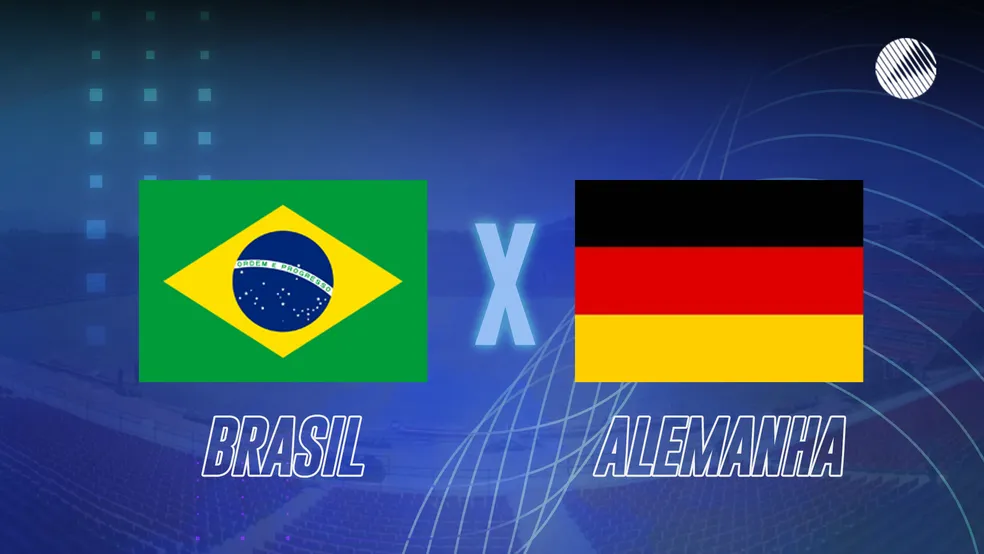

dobro da humilhação
Por: Miguel Nava
na final da copa de 2026 o Brasil ganha da Alemanha de 14x2 devolvendo em dobro a "humilhação" de 2014. todos ficaram de boca aberta
pois essa foi uma das maiores goleadas da história do Brasil. O jogador da alemanha Kai Havertz falou em uma entrevista "Warum hast du übersetzt? Geh an die Arbeit!" que traduzino seria "foi um bom jogo Brasil."Nos cinco minutos do primeiro tempo, o Brasil ja começou marcando seu primeiro gol, e assim foi indo, um gol atrás do outro sem parar. No fim do primeiro tempo ja estava 7x1 para o Brasil. No inicio do segundo tempo todos os jogadores alemães ja estavam desesperados, com medo do que vinha pela frente, e com razão. No segundo tempo eles ja iniciaram precionando o Brasil e fizeram um gol em 7 minutos de jogo, mas não deu outra, o Brasil fez mais 7 gols finalizando com 14x2